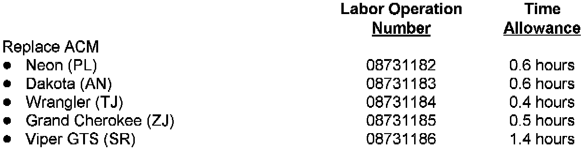

Completion Reporting and Reimbursement / Parts Return
Claims for vehicles which have been serviced must be submitted on the DIAL System. Claims submitted will be used by Chrysler to record recall service completions and provide dealer payments.
Use one of the labor operation numbers and time allowances as shown.
Add the cost of the recall parts package plus applicable dealer allowance to your claim.
Parts Return
Initially, a small number of ACM and bracket assemblies are required to be returned to the Warranty Material Return Center. When an adequate number of returned parts have been accumulated, Parts Return Documents will no longer be generated and parts are to be discarded.
Note:
See the Warranty Administration Manual, Recall Claim Processing Section for complete recall claim processing and material return instructions.